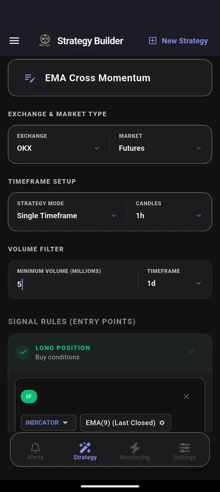
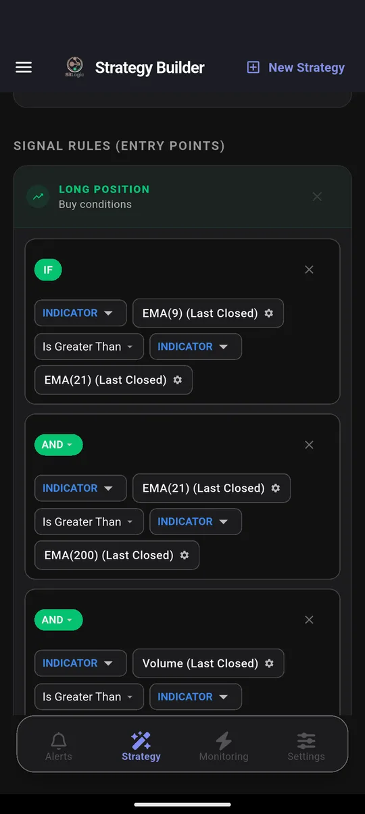
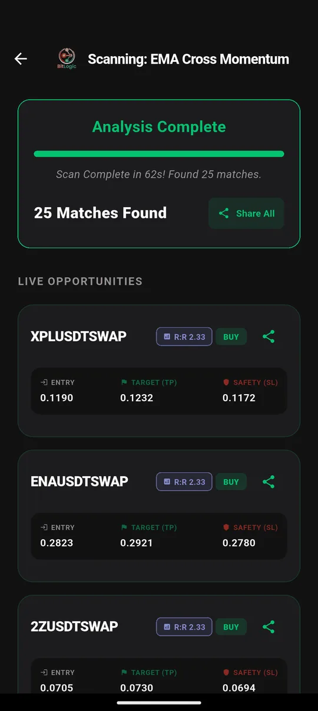

OKX Screener: How to Scan OKX Spot and Perpetuals with Custom Alerts
Quick answer: OKX's own price alerts watch one coin at a time and only react to price. To find which of OKX's hundreds of pairs match a technical setup, you need a screener. BitLogic scans up to 400 of OKX's most-traded perpetual swaps or spot pairs against rules you build. A test on 26 September 2026 finished in 62 seconds with 25 matches.
BitLogic is a no-code crypto screener and alert app for Android and Windows, with a free web screener. It scans every pair on an exchange against rules you build and sends matches as push notifications, or as Telegram messages on Pro.
Features, availability and test results checked 26 September 2026.
What OKX's Built-In Alerts Can and Can't Do
| OKX price alerts | BitLogic rule alerts | |
|---|---|---|
| Watches | One coin you pick | Up to 400 pairs at once |
| Triggers on | Price level or % change | Any mix of indicators, price and volume |
| Knows about RSI, EMA, MACD | No | Yes |
| Short signals | No | Yes, a separate Short rule |
| Delivered by | OKX app | Push notification, plus Telegram on Pro |
OKX's alerts are good for "tell me when BTC hits $X". They can't answer "which perps just crossed above their 200 EMA on rising volume?" That is what a screener is for.
Can You Use OKX in Your Country?
| Country | OKX status |
|---|---|
| United Kingdom | Available. UK retail customers can't trade crypto derivatives, so spot only |
| Australia | Available |
| Germany | Available. MiCA-licensed in Malta |
| United States | Separate OKX US platform with its own, smaller product list |
| Canada | Not available since 2023 |
BitLogic reads OKX's global market. If you use OKX US, some pairs in your results may not be tradable on your account. In the UK, screen Spot rather than perpetuals.
How to Screen OKX in BitLogic
Step 1: Choose OKX and a market
In the Strategy tab, pick OKX, then Futures (USDT-margined perpetual swaps) or Spot. A minimum-volume filter keeps thin contracts out of your results. This test used $5 million per day.

Step 2: Build or load a rule
Build your own rule, or load one from Prebuilt and adjust it. The test used an EMA trend stack: EMA 9 above EMA 21, EMA 21 above EMA 200, and volume above its 20-candle average. All conditions must be true for a pair to match. It is close to our Triple EMA Cross strategy.

Step 3: Scan

Each match shows the direction (BUY or SELL), an entry, a take-profit, a stop-loss and the resulting reward-to-risk ratio.
Step 4: Automate it
Live Monitoring re-runs the same strategy in the background (every 1, 5, 15 or 30 minutes, every 1 or 4 hours, or once a day) and notifies you when a new pair matches, even with the app closed. You can monitor up to five strategies at once. On Pro, the same alerts also go to Telegram: tap Connect Telegram, press Start in the bot, and you are done.
Screen OKX free on Google Play, or on Windows.
The Test: OKX Perpetuals, 26 September 2026
| Setting | Value |
|---|---|
| Market | OKX USDT perpetual swaps, 1-hour candles |
| Rule | EMA 9 > EMA 21 > EMA 200, volume above average |
| Volume filter | $5M per day |
| Contracts checked | 400 |
| Time | 62 seconds |
| Matches | 25 |
Twenty-five of 400 is a 6% hit rate. That's a useful sanity check for a trend rule: loose enough to find something in most markets, tight enough that you can read every result.
These are scan results, not recommendations. A match means a pair met the rule at that moment, nothing more.
Three OKX Rules for Perpetual Traders
1. Momentum continuation
IF EMA(9) [1h, Last Closed] Is Greater Than EMA(21) [1h]
AND EMA(21) [1h] Is Greater Than EMA(200) [1h]
AND RSI(14) [1h] Is Between 50 and 70This finds trends with room to run. The RSI band leaves out coins that are already overextended.
2. Short the failed bounce (Short rule)
IF RSI(14) [15m, Last Closed] Crosses Below 70
AND Close [15m] Is Less Than EMA(50) [15m]Perpetuals let you trade both directions, and BitLogic evaluates Short rules just like Long ones.
3. Sudden move on heavy volume
IF Close [15m, Last Closed] Increased by % 2
AND Volume [15m] Is Greater Than Volume SMA(20) × 2"Increased by %" compares the last closed candle with the one before it. This flags any contract that jumped 2% or more in a single 15-minute candle on double its normal volume, often the first sign that something is moving.
OKX Timeframes in BitLogic
| Market | Timeframes |
|---|---|
| OKX Spot and Perpetuals | 1m, 3m, 5m, 15m, 30m, 1h, 2h, 4h, 6h, 12h, 1d, 1w |
Pair It with Funding and Liquidation Alerts
Perpetual traders care about more than price. BitLogic's market feeds cover funding rates, open interest, volume spikes and price anomalies, plus large liquidations on Binance. Each has its own threshold, and they run alongside your custom rules. Read how funding rate alerts work and how liquidation alerts work.
FAQ
Does OKX have a crypto screener?
OKX has market lists and price alerts, but no screener that filters every pair by your own technical rule. BitLogic adds that by scanning up to 400 OKX perpetuals or spot pairs.
Can BitLogic scan OKX perpetual swaps?
Yes. Choose OKX and the Futures market to scan USDT-margined perpetual swaps, or Spot for spot pairs.
Is OKX available in the UK and Australia?
Yes, OKX is available in both. UK retail customers can't trade crypto derivatives, so UK users should screen OKX Spot. OKX is not available in Canada, and US customers use the separate OKX US platform.
Does BitLogic need my OKX API key?
No. BitLogic reads OKX's public market data and never places trades, so no API key is required.
Can I get OKX alerts on Telegram?
Yes. BitLogic Pro sends every Live Monitoring match to Telegram. You connect with one tap and press Start in the bot.
The Bottom Line
OKX alerts watch a price. A screener watches a setup, across every contract at once. Filter out thin markets, write the rule, and let Live Monitoring tell you when OKX lines up.
Download BitLogic free on Google Play and point your first rule at OKX.
Nothing here is financial advice. Perpetual futures are leveraged and high-risk, and exchange availability changes, so check OKX's terms for your country.